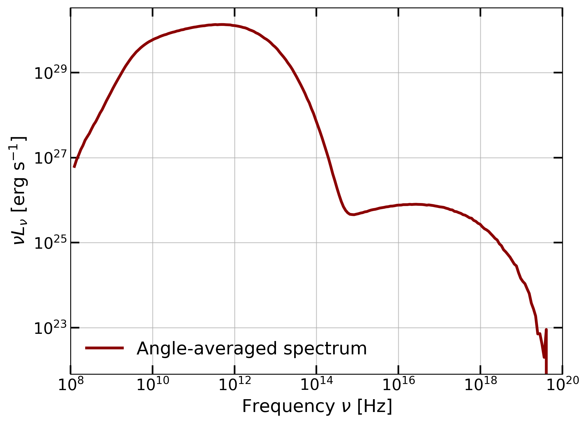

Quick Start Guide for GPUmonty
GPUmonty is a high-performance, CUDA-accelerated Monte Carlo radiative transfer (MCRT) code designed for the spectral modeling of accreting black holes based on igrmonty.
Prerequisites
Before compiling, ensure your system has the following libraries installed and accessible:
CUDA Toolkit: Required for the
nvcccompiler and GPU kernels (Install Guide).GNU Scientific Library (GSL): Required for various mathematical and statistical routines (GSL Home).
Hierarchical Data Format v5 (HDF5): Required for reading GRMHD simulation snapshots (HDF5 Home).
Environment Configuration
Locate the installation paths for these libraries on your system and update the corresponding variables in the Makefile:
CUDA_PATH = /usr/local/cuda
GSL_PATH = /usr/local
HDF5_INCLUDE = /usr/include/hdf5/serial
HDF5_LIB = /usr/lib/x86_64-linux-gnu/hdf5/serial
After you have changed these settings, compile by typing:
make -j 15
In case you want to compile for debugging, use:
make BUILD_TYPE=debug
CUDA Number of Blocks Configuration
The build system includes an auto-tuning feature that detects the hardware specifications of the GPU on your current machine (specifically Device 0).
During compilation, the Makefile triggers a probe (defined in GetGPUBlocks.mk) that calculates the optimal number of blocks based on the GPU’s multiprocessor count and blocks-per-multiprocessor limit. This process automatically updates the N_BLOCKS definition located in:
src/config.h
By default, this feature is enabled. If you wish to manually set N_BLOCKS to a fixed value in the config file, you can disable the auto-tuner by setting the GPU_TUNING flag to 0:
make BLOCK_TUNING=0
Warning
If you are running on a High Performance Computing (HPC) cluster, do not compile on the login/head node, as these nodes often lack GPUs or possess different hardware than the compute nodes. To ensure the auto-tuner detects the correct GPU architecture for your run, we recommend adding the compilation step directly inside your job submission script (e.g., Slurm or PBS script).
Multi-Core Acceleration (OpenMP)
GPUmonty benefits from OpenMP for CPU-bound tasks such as data pre-processing and grid initialization. To enable multi-threaded CPU execution:
export OMP_NUM_THREADS=XX
Replace XX with the desired number of threads (recommended: number of physical CPU cores).
Configuration Parameters
Simulation parameters are passed to the executable via a .par file. You can find a baseline configuration in /gpumonty/template.par.
To run a simulation with your custom parameters:
./gpumonty -par path/to/your_file.par
Parameter |
Description |
|---|---|
|
Superphoton Count: The approximated total number of photon packets to be generated. |
|
Data Path: Relative or absolute path to the input GRMHD data file. |
|
Output Name: Filename for the output spectral data (e.g., |
|
Black Hole Mass: Mass of the central black hole in Solar Masses (\(M_\odot\)). |
|
Mass Unit Scale: Normalization factor (in grams) to scale dimensionless GRMHD density to physical CGS units. |
|
Proton-to-Electron Temperature Ratio: Constant ratio (\(T_p/T_e\)) used if a dynamic heating model is not active. |
|
Temperature Ceiling: Numerical cap for the dimensionless electron temperature (\(\Theta_e = k_B T_e / m_e c^2\)). |
Analyzing the Output
To facilitate data post-processing and visualization, an example Jupyter Notebook is provided in the repository.
Notebook Location:
python/example.ipynbWorkflow: This tutorial guides you through opening output files, extracting spectral arrays, and generating plots.
Spectral Data Structure
When analyzing the raw results in Python, please note the relationship between luminosity and the observer’s viewing angle:
Indexing: The luminosity array (
nuLnu) is multi-dimensional; each index in the array corresponds directly to one of thetheta_binsdefined in your simulation.
GRMHD Data File for Testing
To reproduce tests using the same GRMHD input employed in the GPUmonty paper, download the dataset from Prather et al. (2023) via the Harvard Dataverse:
After downloading, place the GRMHD data file in the data/ directory and run:
./gpumonty -par template.par
The resulting spectrum should match the expected output shown below:
{kind=link}

Expected Result: The resulting spectrum showing the \(\nu L_\nu\) distribution across frequencies.
LICENSE
GPUmonty is free software: you can redistribute it and/or modify it under the terms of the GNU General Public License as published by the Free Software Foundation, either version 2 of the License, or (at your option) any later version.
See the GNU General Public License for more details.